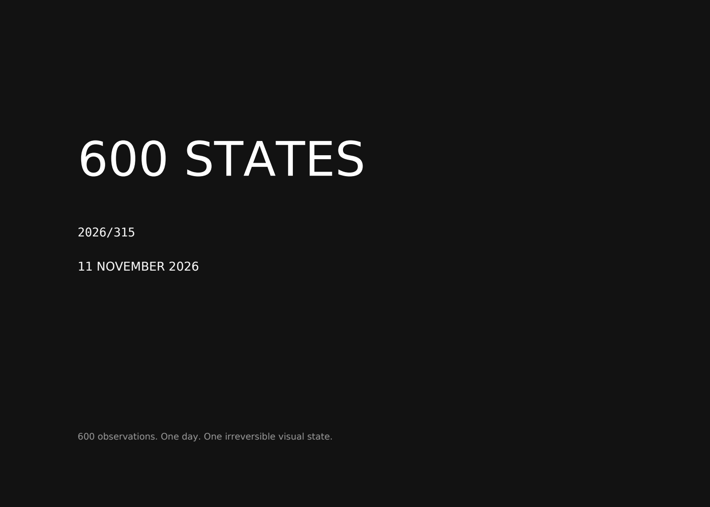
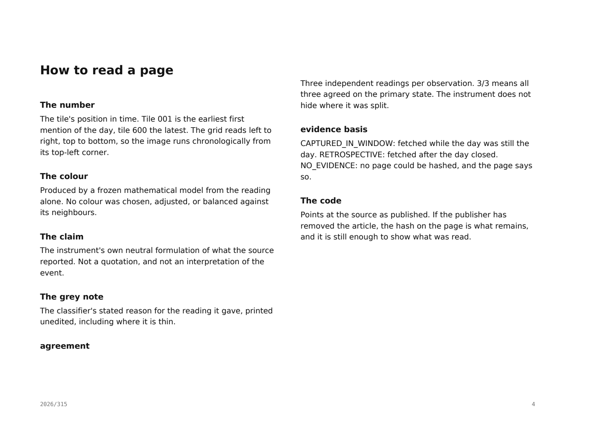
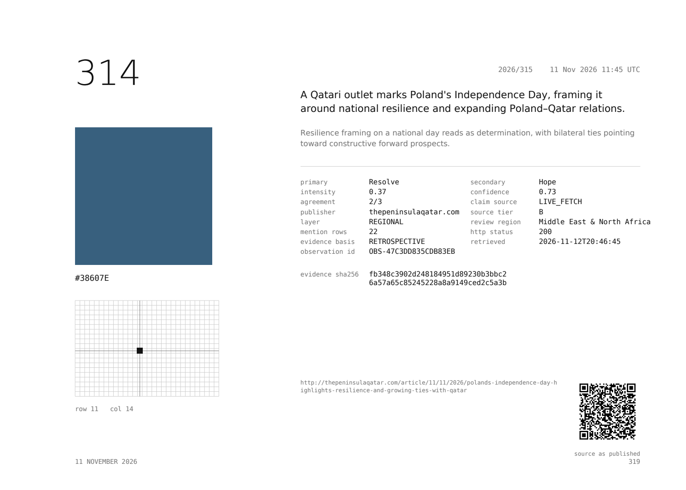
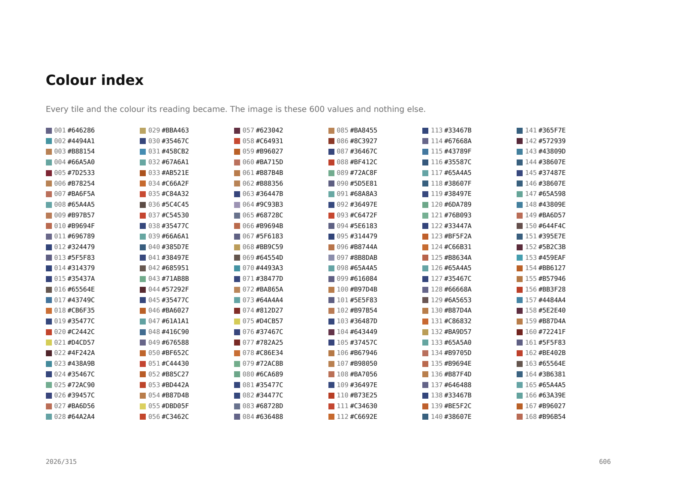

2026/315
A calibration work. Not a State, and it will not become one.
Observed day: 11 November 2026, UTC
A calibration work. Not a State, and it will not become one.
Observed day: 11 November 2026, UTC
One UTC day of observed news, read through the same frozen protocols as the series and rendered by the same instrument: 600 observations, 600 colours, laid out in the order they happened across a 30 × 20 field.
It is a calibration work. It was the only full run under v3.3, the manifest form that added the evidence-time fields, made to find out whether the chain holds end to end before the series began. It is not a numbered State and it cannot become one. Its evidence was fetched eighteen hours after the observation window closed, so not one of its 600 rows carries source content captured inside the day — and the rule that numbers a work is about the window, not about the picture.
Nor can it be re-run into the series later. One day, one run, one outcome. A day is read once, frozen once, and the day of 11 November 2026 has passed. There is no second attempt at it, for this instrument or any other.
The colour. Every tile’s hex value is recomputed from the frozen emotion protocol and compared with the value in the frozen manifest, at the moment this page is built.
— of 600 tiles reproduce exactly, with no deviations. The figure is counted by the build from the archived manifest, not written in by hand; if it ever stops being 600, this page says so by itself.
That is the part of the work that is a function: given the same four classified values, the colour formula returns the same colour today as it did on 12 November 2026, and will tomorrow.
The selection. Which 600 observations became this work cannot be reproduced from the archive.
At the time this day was run, the country assigned to a document was decided by a majority count held in an unordered set, and ties were broken by the order the interpreter happened to use — which depends on an environment variable that is random for every process. The country decides the region, the region carries a quota, and the quota decides which observations are admitted. So the tie-break was part of the selection, and nothing had decided it.
It was found and corrected on 22 November 2026, ten days after this work was produced. Every day run before that correction — this one included — may select differently if it is run again, and would then disagree with its own frozen manifest. The whole finding is written up as 600 LABS, chapter XVII.
This is stated here rather than left to be discovered. The work is what it is: a correct colour rendering of a selection whose derivation is no longer repeatable.
The manifest was frozen with a SHA-256 sidecar beside it, and it still hashes to that value. What that proves is that the file has not changed since it was written.
It does not prove when it was written. The hash is ours and the clock that dated it is ours, so the time of the freeze rests on our own record and on nothing else. It does not prove the freeze was the first attempt either. No mechanism can prove that, and it is not claimed.
There is no external timestamp on this work yet. An OpenTimestamps proof binds a manifest’s hash to a Bitcoin block and is the one part of this that does not depend on trusting us — it is built into the chain’s own run, and when it is applied here it will be applied by that code path and not by hand.
600 observations of 11 November 2026, in chronological order, left to right and top to bottom. Nothing has been moved, nothing composed, no colour chosen. Click any square to read the observation behind it.

Pick a square. The observation that produced its colour appears here.
The representative source as captured for the observation day. Some links have since moved or gone behind a paywall. The manifest records what was captured and its hash; where the link no longer resolves, that record is ours and cannot be checked against the publisher.
Held on this tile, so you can reach the source. Click it again, or press Escape, to follow the pointer.
The book. Every State has one. It is generated from the same frozen manifest the image is rendered from, by a program that cannot say anything the manifest does not — 611 pages for this day, one page per tile. These are its pages. It is not printed yet.

Page 1. The title page.

Page 4. How to read a page, so that a tile page can be read without a caption.

Page 319, tile 314 of 600. One page was chosen to be shown here; the other 599 tile pages have the same form. The QR code still points at the publisher’s article and is changed before the first printed book — the code above is the one the page carries today.

Page 606. The colour index. Every tile and the colour its reading became — the part that makes it plain the book is generated and not written.
The book is not printed. These are screen renderings of a PDF. Paper, binding and dimensions are decided, not carried out.
Nothing here can be bought.